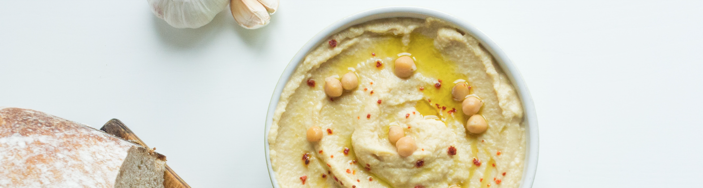

The most delicious hummus is wonderfully creamy and at the same time light and airy. Forget the purchased one. With this recipe you can easily make your own hummus and make it creamy and fluffy like never before. You don't need much more than chickpeas, tahini, olive oil, and spices.
Ingredients
- Canned chickpeas
- Lemon juice
- Salt
- Garlic
- Tahini
- Ice cold water
- Cumin
-
 Olive oil
Olive oil
Instructions
- Drain the canned chickpeas through a sieve – continue working with 265 g of drained chickpeas. Collect 50 ml of chickpea water and keep a few chickpeas as decoration. Put everything aside.
- Put the juice of one lemon, the clove of garlic and 1/2 teaspoon salt in the blender and blend until smooth.
- Put the 100 g Tahini (best: from Koska) in the mixer and mix thoroughly. Slowly pour the cold water and the chickpea water into the running knife. A light, fluffy mass should result.
- In the last step, add the chickpeas, 1-2 tablespoons of olive oil (can be left out if you want to decrease fat) and 1/2 teaspoon of cumin and mix for at least 3 minutes until a creamy, tender mixture is formed. Season to taste with salt and lemon juice. If the hummus is too thick, mix in some more cold water.
Voilá! To serve, drizzle the hummus with olive oil and decorate with toppings (chickpeas, sesame, herbs). Crackers, pita bread or vegetable sticks go well with it.
Share via
About Anna
 As a heavy hummus consumer I came to that point where I just didn't feel comfortable in buying pre-made spreads anymore. Therefore, I decided to make hummus myself and let me tell you, this was one of the best decisions ever. Since then I've shared my recipe and anyone I know who's tried making it freaked out. So, what are you waiting for?
As a heavy hummus consumer I came to that point where I just didn't feel comfortable in buying pre-made spreads anymore. Therefore, I decided to make hummus myself and let me tell you, this was one of the best decisions ever. Since then I've shared my recipe and anyone I know who's tried making it freaked out. So, what are you waiting for?
Contact
In case you have any questions feel free to contact me via a direct message, my website's contact form or click on the button below to send me an email.